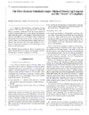
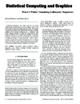

Journal articles
2013
- Elliptical Insights: Understanding Statistical Methods Through Elliptical Geometry.
- Statistical Science, vol. 28, no. 1, pp. 1–39, 2013.
Download: from web | via doi | supplementary materials

- The Generalized Ridge Trace Plot: Visualizing Bias and Precision.
- Journal of Computational and Graphical Statistics, vol. 22, no. 1, pp. 50–68, 2013.
Download: from web | supplementary materials
- Hypothesis tests for Multivariate Linear Models Using the car package.
- The R Journal, vol. 5, no. 1, 2013.
- [In press]
Download: from web
2012
- The History of ViSta: The Visual Statistics System.
- Wiley Interdisciplinary Reviews on Computational Statistics, vol. 4, pp. 295–306, 2012.
- André-Michel Guerry's Ordonnateur Statistique: The First Statistical Calculator?.
- The American Statistician, vol. 66, no. 3, pp. 195–200, 2012.
2011
- Comment (Graph people versus Table people).
- Journal of Computational and Graphical Statistics, vol. 20, no. 1, pp. 18–27, 2011.
2010
- HE Plots for Repeated Measures Designs.
- Journal of Statistical Software, vol. 37, no. 4, pp. 1–37, 2010.
Download: from web

- The First (Known) Statistical Graph: Michael Florent van Langren and the ``Secret'' of Longitude.
- The American Statistician, vol. 64, no. 2, pp. 185–191, 2010.
Download: from web | via doi | supplementary materials
2009

- Visualizing hypothesis tests in multivariate linear models: The heplots package for R.
- Computational Statistics, vol. 24, pp. 233–246, 2009.
Download: from web

- Where's Waldo: Visualizing Collinearity Diagnostics.
- The American Statistician, vol. 63, no. 1, pp. 56–65, 2009.
Download: from web | via doi | supplementary materials
- Tableplot: A new tool for assessing precise predictions.
- Zeitschrift für Psychologie / Journal of Psychology, vol. 217, no. 1, pp. 38–48, 2009.
Download: via doi

2008
- Un Tourangeau trop discret: André-Michel GUERRY (1802--1866).
- Mémoires de l'Académie de Touraine, vol. XXI, pp. 213–231, 2008.
- [Read (Maxime Cunin): Feb. 8, 2008, Acad\'emie de Touraine]
Download: from web

2007

- HE plots for Multivariate General Linear Models.
- Journal of Computational and Graphical Statistics, vol. 16, no. 2, pp. 421–444, 2007.

- A.-M. Guerry's Moral Statistics of France: Challenges for Multivariable Spatial Analysis.
- Statistical Science, vol. 22, no. 3, pp. 368–399, 2007.
Download: from web | supplementary materials
2006
- Data Ellipses, HE Plots and Reduced-Rank Displays for Multivariate Linear Models: SAS Software and Examples.
- Journal of Statistical Software, vol. 17, no. 6, pp. 1–42, 2006.
Download: from web
2005

- The early origins and development of the scatterplot.
- Journal of the History of the Behavioral Sciences, vol. 41, no. 2, pp. 103–130, 2005.
Download: from web
2004
- Strong versus Weak Significance Tests and the Role of Meta-Analytic Procedures.
- Journal de la Société Fran\ccaise de Statistique, vol. 104, no. 4, pp. 47–53, 2004.
- [(published in 2005)]
2003

- Effect Ordering for Data Displays.
- Computational Statistics and Data Analysis, vol. 43, no. 4, pp. 509–539, 2003.
- Visual Categorical Analysis in ViSta.
- Computational Statistics and Data Analysis, vol. 43, no. 4, pp. 495–508, 2003.
Download: from web
2002

- A Brief History of the Mosaic Display.
- Journal of Computational and Graphical Statistics, vol. 11, no. 1, pp. 89–107, 2002.
Download: from web

- Corrgrams: Exploratory displays for correlation matrices.
- The American Statistician, vol. 56, no. 4, pp. 316–324, 2002.
Download: from web

- Visions and Re-Visions of Charles Joseph Minard.
- Journal of Educational and Behavioral Statistics, vol. 27, no. 1, pp. 31–51, 2002.
Download: from web
2000
- Re-Visions of Minard.
- Statistical Graphics and Computing Newsletter, vol. 11, no. 1, pp. 1, 13–19, 2000.
Download: from web
- Note on ``Obtaining the Maximum Likelihood Estimates in Incomplete R× C Contingency Tables...''.
- Journal of Computational and Graphical Statistics, vol. 9, no. 1, pp. 158–166, 2000.
Download: from web
1999

- Extending Mosaic Displays: Marginal, Conditional, and Partial Views of Categorical Data.
- Journal of Computational and Graphical Statistics, vol. 8, no. 3, pp. 373–395, 1999.
1995

- Data Analysis using APL2 and APL2STAT.
- Sociological Methods & Research, vol. 23, no. 3, pp. 282–302, 1995.
- Conceptual and Visual Models for Categorical Data.
- The American Statistician, vol. 49, pp. 153–160, 1995.
Download: from web
1994
- Mosaic Displays for Multi-way Contingency Tables.
- Journal of the American Statistical Association, vol. 89, pp. 190–200, 1994.
Download: from web
- SAS/IML Graphics for Fourfold Displays.
- Observations, vol. 3, no. 4, pp. 47–56, 1994.
Download: from web
- Using APL2 to create an object-oriented environment for statistical computation.
- Journal of Computational and Graphical Statistics, vol. 3, no. 4, pp. 387–407, 1994.
Download: from web
1982
- The Toronto Word Pool: Norms for imagery, concreteness orthographic variables, grammatical usage for 1080 words.
- Behavior Research Methods & Instrumentation, vol. 14, pp. 375–399, 1982.
Download: from web
1980
- Interactive Presentation in Multitrial Free Recall.
- Memory and Cognition, vol. 8, pp. 265–270, 1980.
1970
- On description of subcultural lexicons: A multidimensional approach.
- Journal of Personality and Social Psychology, vol. 14, pp. 55–65, 1970.
Download: from web